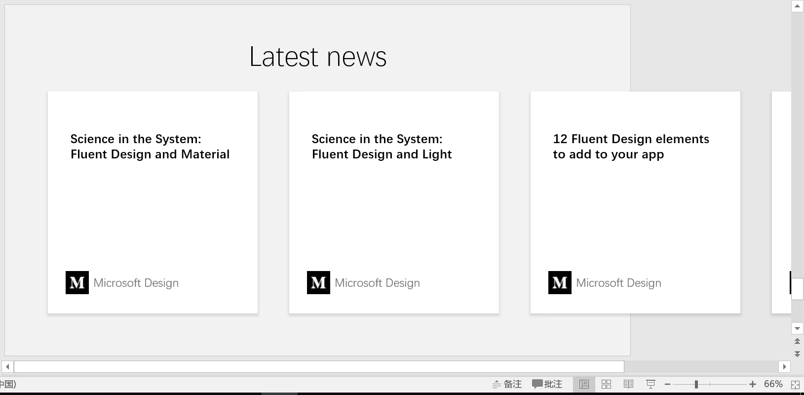
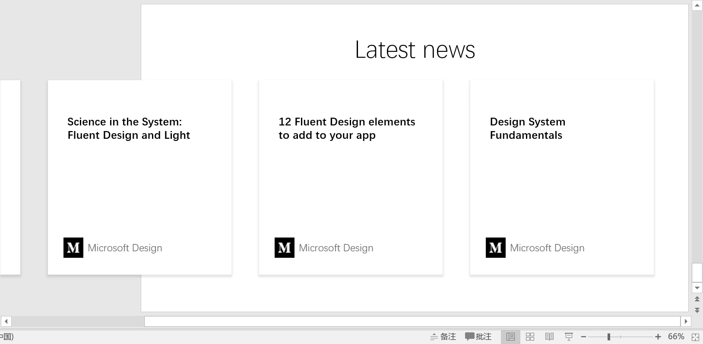
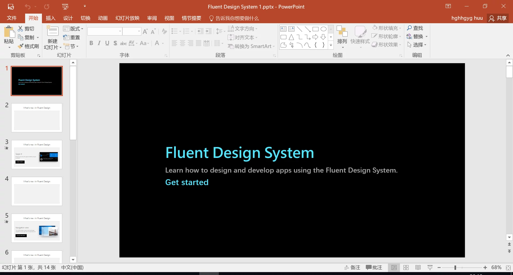

PPT设计指南

- huuhghhgyg
- 1 min read

其实做了这么多的 PPT 以后，慢慢摸索出了一种做 PPT 的方式技巧。但其实下面包括的也不仅仅是技巧，还包含了一套我认为比较成熟的设计系统（借鉴+创新），目的是为了使演示过程更加流畅。当然，要制造出这样的 PPT，达到这样的效果是肯定要花费一些时间的。可能只有像我这种对美有变态追求的人可能才会花费如此多的时间做 PPT，如果您有兴趣的话，可以继续看下去。
所需: Microsoft PowerPoint 2016 或以上 耐心
引言
Microsoft Office 2016 中新引进了“变体”的切换效果。通过这个全新的切换效果能更准确地实现Material Design和Microsoft Fluent Design System中的一些内容，使整个幻灯片的设计更加系统化。
🔗 链接
变体的简单应用
“变体"是 Office 2016 中新增加的一种切换效果。它可以自动识别两张相邻的幻灯片之间的变化并自动插补动画。下面通过两个例子介绍这种切换动画的使用方法。
精确的位移
-
在第一张幻灯片中创建一个正方形。

-
在第二张幻灯片中创建一个正方形，并移动到你想要的位置。

-
选中第二张幻灯片，在顶栏的"切换"中选择"变体”。

-
放映幻灯片，正方形从第一张幻灯片的位置移动到第二张幻灯片的位置。
精确地位移并更改大小
在上述的操作的基础上您可以尝试改变第二张幻灯片中正方形的形状和大小，您可以发现放映幻灯片的时候原来的正方形自动变成了第二张幻灯片中的样式(大小，位置，甚至颜色，形状的改变)。
因此，您可以利用变体的这一特性实现后文中卡片的大小，位置甚至深度(阴影大小)的变化。
多动画连续播放和延迟
 1.创建矩形若干个,并纵向排列。
1.创建矩形若干个,并纵向排列。
 2.拖动鼠标选中所有创建的矩形，在顶栏的"动画"选项卡中选择"淡出"动画。此时，选中的所有矩形在幻灯片放映时会同时淡出。
2.拖动鼠标选中所有创建的矩形，在顶栏的"动画"选项卡中选择"淡出"动画。此时，选中的所有矩形在幻灯片放映时会同时淡出。


3.为了遵循 Material Design 中的"有层次的时序"的原则，我们将每个矩形相对其上层的矩形延迟 0.1 秒钟淡出,直至最后一个矩形。
建议使用"缩放"动画实现矩形的顺次进入屏幕，这么做的依据是下文中所提将到的"视觉连贯性"原则。缩放在大部分情况下是最适合几何形状进入屏幕的方式，而顺次淡出则适合文字进入屏幕。 上文使用矩形是为了简化演示过程。
圆的场景切换的实现
 1.您将在第一张幻灯片中创建这个场景切换。这意味着这一张幻灯片将包含两章节的内容(前一章节的结束部分和后一章节的开头部分)。这里用"标题"二字表示上一章节的结束部分。
1.您将在第一张幻灯片中创建这个场景切换。这意味着这一张幻灯片将包含两章节的内容(前一章节的结束部分和后一章节的开头部分)。这里用"标题"二字表示上一章节的结束部分。
 2.创建一个与演示区域大小相当的正圆，并将其移动到演示区域的中心。
2.创建一个与演示区域大小相当的正圆，并将其移动到演示区域的中心。
 3.选中刚才创建的圆形，给所选圆形添加**“缩放”**动画(在顶栏的"动画"中找到"缩放"，并点击)。从含圆的那张幻灯片开始放映幻灯片，您就能观察到"圆形场景切换"。
3.选中刚才创建的圆形，给所选圆形添加**“缩放”**动画(在顶栏的"动画"中找到"缩放"，并点击)。从含圆的那张幻灯片开始放映幻灯片，您就能观察到"圆形场景切换"。
元素
卡片(Cards)
分隔各组不同的内容，并归类。
卡片是包含一组特定数据集的纸片，数据集含有各种相关信息，例如，关于单一主题的照片，文本，和链接。卡片通常是通往更详细复杂信息的入口。卡片有固定的宽度和可变的高度。最大高度限制于可适应平台上单一视图的内容，但如果需要它可以临时扩展（例如，显示评论栏）。卡片不会翻转以展示其背后的信息。
显示这些内容时使用卡片布局：
- 为一个集合，由多种数据类型组成（例如，卡片集包含照片，电影，文本，图像）
- 不要求直接比较（观看者不直接与图像或字符串比较）
- 包含可变长度内容，例如评论
- 如果使用列表需要显示超过三行文本
制作卡片
 1.在顶栏的"插入"选项卡中选择"形状"，选择矩形。
1.在顶栏的"插入"选项卡中选择"形状"，选择矩形。
 2.在创建好的卡片上右击，选择"设置形状格式"。
2.在创建好的卡片上右击，选择"设置形状格式"。
 3.在右边弹出来的边栏上选择"油桶"的选项卡，选择纯色填充，将填充颜色设置为白色。线条选择无线条。
3.在右边弹出来的边栏上选择"油桶"的选项卡，选择纯色填充，将填充颜色设置为白色。线条选择无线条。
 4.选择"五边形"选项卡，设置阴影，将阴影的预设样式设置为框选的样式。
4.选择"五边形"选项卡，设置阴影，将阴影的预设样式设置为框选的样式。
 5.最终效果如图。
5.最终效果如图。
按钮(Buttons)
在 PPT 中，一般使用的是圆形按钮。圆形按钮能更方便地引导转场。圆形按钮一般与图标配合使用。更有想象力的用法可以参照此处
在 PPT 中，用于表示一段演示的结束，并引出完全切换的转场(动画)。
按钮有阴影，因此与卡片的制作方式大同小异。不同的是按钮一般被赋予颜色而不是白色，并且按钮中心一般会有图标显示其作用。您可以按照您的需求定制按钮。


纸条(Chips)
拓展可能性，作为一个原因容器。入场一般用横向拉取。

图标(Icons)
增强观者对当前页的理解，增强视觉体验。
🔗 链接
色彩
如果你手头没有拿得出手的颜色可以选择的话，我推荐使用这个配色工具。这是 Material Design 的配色工具(Color Tool)，你可以在线搭配所需颜色，同时会生成颜色代码(HTML 格式)。得到HTML 格式的颜色代码以后转换成RGB 格式，最终导入 PPT 内使用。
🔗 链接
转场
为什么要设计转场？
- 使整个演示过程更流畅，更有层次感。
- 交代屏幕中元素去向，尽量避免观者产生不适感
转场包括这两部分:
- 完全切换(Material 圆)
- 分支情况：可以使用卡片进行自由扩展
视觉连贯性(Fluency)
在两个视觉效果不同的页面之间的转场应该平滑、轻快，更重要的是使观看者感觉清晰而非困惑。一个好的转场可以四两拨千斤，让观看者清楚地了解他们应该关注哪里。每一个转场应该包含以下三类元素：
- 新入元素(Incoming elements): 全新的元素进入屏幕时需要被引导，从已有场景中转变而来的元素需要重新被识别
- 淡出元素(Outgoing elements)：与当前场景不相关的元素应当以恰当的方式被移除
- 通用元素(Shared elements)：指那些从转场开始到结束都没有发生变化的元素。可以是细微至单个图标，也可以是显著到占据屏幕的图片展示
有层次的时序(Layering)
在建立转场的时候，对于元素移动的顺序和时机都要详加考虑。要确保这个动画能使信息的展示具有层次感。也就是说，它能引导观看者的关注力，将最重要的内容传递给观看者。
然而，这并不是说最重要的东西先动，最不重要的东西就后动。元素转场的时序要平滑并且避免脱节的感觉。
应用：逐条展示时，用"淡出"顺次引出对象,每条延时应为 0.1 秒。
真实的动作（Authentic Motion）
感知一个物体有形的部分可以帮助我们理解如何去控制它。观察一个物理的运动可以告诉我们它轻还是重，柔性还是刚性，小还是大。在 material design 设计规范中，动作不止是呈现着它美丽的一面，它还意味着在空间中的关系、功能以及在整个系统中的趋势。当一张卡片被强调或选中时，其离地面的距离增大，视觉上看起来被抬高，z 轴距离增大，因此阴影应变大。当然，为了凸显这一动作，您可以为卡片的背景套上一层灰色的半透明层。
体积和重量（Mass and Weight）
物理世界中物体拥有质量，所以只有当施加给它们力量的时候才会移动，因此，物体没法在瞬间开始或者结束动作。动画突然开始或者停止，或者在运动时突兀的变化方向，都会使用户感到意外和不和谐的干扰。在现实世界中，事物不会立即开始或停止移动。他们需要时间来加速和减速。宽松使元素移动，好像受摩擦等自然力的影响。因此，大的元素质量大，运动所需时间会更长。在 PPT 中，设置的运动时间也应该相应地更长。
场景(纯原创)
拓展屏幕(Extended Display):屏幕只是充当一个查看器，不局限于屏幕大小。 1.可将部分下一张 PPT 中的元素暴露于当前屏幕中，暗示当前章节未结束，增强连续性。
示例


2.充当放大器，使转场不失流畅。放大后若要继续当前章节，应还原屏幕(退回放大前的状态)再继续当前章节，交代元素去向。
e.g 地图放大,强调场景。
下一章节 从当前屏幕拉出下一章节按钮（圆形），并由按钮进行转场，由按钮决定下一章节的背景颜色。
拓展卡片(Extended Card) 卡片大小也可以改变。（参见 material card），当卡片拓展（放大）后，可引出详细内容。若被放大的卡片周围有卡片，此卡片将会推开周围的卡片，而不是直接覆盖其它卡片上。当卡片收缩时，若其周围本有卡片，则应将其它卡片拉回。若无，也可以借此机会引出新的卡片。
- 拓展时不宜覆盖其它卡片
- 若不是极大地改变卡片的面积则不应该更改卡片的深度（表现为阴影的大小）
示例文件
